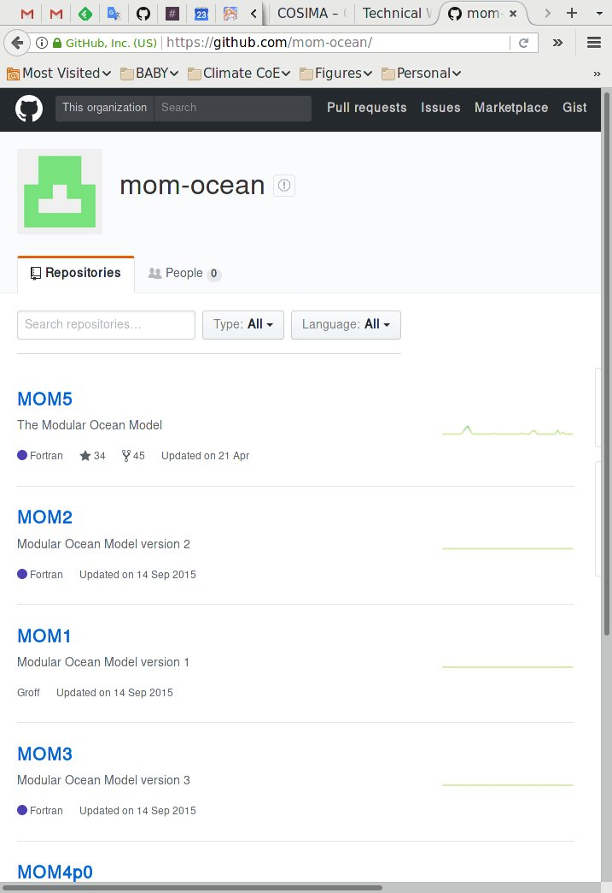

COSIMA Technical Working Group (TWG) Update
Aidan Heerdegen
Australian National University
Goals
- Updates on activities across research centres
- Collaborative support of general technical issues
- Identification of large-scale issues
- Compilation of unresolved and ongoing issues
Members
ANU
- Aidan Heerdegen
Bureau of Meteorology
- Justin Freeman
- Mirko Velic
CSIRO Aspendale
- Peter Dobrohotoff
CSIRO Hobart
- Matt Chamberlain
- Russ Fiedler
Double Precision
- Nicholas Hannah
NCI
- Marshall Ward
Monthly meetings since August 2016
Collaboration Platform
- OceansAus
- Github organisation
- access-om
- Model configurations
- cosima-cookbook
- postprocessing collaboration
- runoff_regrid
- Preprocessing tool
- MATM, CICE
- Common ACCESS versions
https://github.com/OceansAus
MOM repository update
- Migration to new github account
- Code updates
- OFAM3 integration
- Improved CM2 stability
- Test case input fields
- More NetCDF4 support
- Common FMS for MOM 5/6
https://github.com/mom-ocean
ACCESS-OM2 Science Updates

- 75-level (KDS75) vertical grid
- 0.1° support
- JRA-55 forcing
- NCI-hosted
- MATM integration
ACCESS-OM2 Infrastructure Updates
- CMake build support (MOM)
- Runtime support (payu)
- Scaling performance validation of JRA55 and KDS75
Interactions with the TWG
- Review minutes from monthly meetings
- Update local TWG members on current issues
- Nominate local technical staff to join
- Attend meetings for high-priority tasks